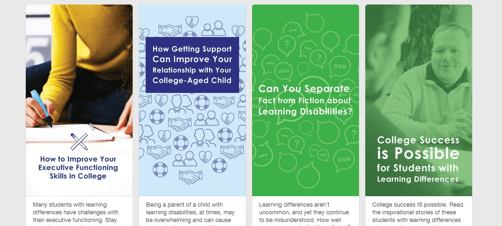
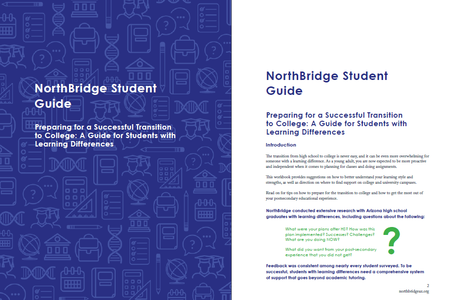

NorthBridge
Graphic Design, Print Design, & Social Media
NorthBridge is a Phoenix nonprofit that provides support for college-bound students with learning disabilities. My work on this project includes creating 8 social media graphics optimized for their platforms: NorthBridge’s blog, Facebook, Twitter, and Pinterest.
I also designed a guide for parents of students with learning differences as. By the end of designing the social graphics and guides, I had developed a set of icons and modernized the brand while staying true to NorthBridge’s guidelines.

